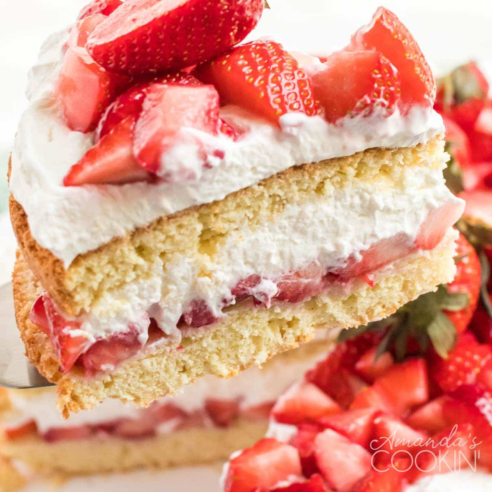

Strawberry Shortcake
This strawberry shortcake is the classic, sweet biscuit-style shortcake — not the pound cake variety. The cake is sliced in half and layered with juicy strawberries and whipped cream for a delicious summertime treat.

Prep Time:
30 mins
Cook Time:
20 mins
Additional Time:
N/A
Total Time:
50 mins
Servings:
8
Yield:
1 8-inch round cake
Ingredients
- Strawberries: Of course, a strawberry shortcake needs strawberries. This recipe calls for three pints of fresh strawberries.
- Sugar: You'll use white sugar for both the strawberries and the shortcake.
- Flour: This strawberry shortcake is made almost like biscuits, so you'll need 2 ¼ cups of all-purpose flour.
- Baking Powder: Baking powder helps the shortcake rise.
- Salt: Just a hint of salt adds a depth of flavor to the shortcake.
- Shortening: Shortening is a classic shortcake ingredient, but reviewers say they've also had success using butter instead.
- Egg: One egg binds the dough together.
- Milk: Your milk of choice will keep the dough moist.
- Whipped cream tops this cake.
Directions
Step1Prep the berries: Slice the strawberries and cover them with white sugar.
Step2Make the batter: Combine the dry ingredients, then cut in the shortening until the mixture is crumbly. Add the egg and milk and stir until combined.
Step3Bake the cake: Pour the batter into the prepared pan and bake until golden brown.
Step4Assemble the strawberry shortcake: Cut the cake in half. Top the bottom layer with half the strawberries, then replace the top of the cake. Top the cake with the remaining berries and whipped cream.